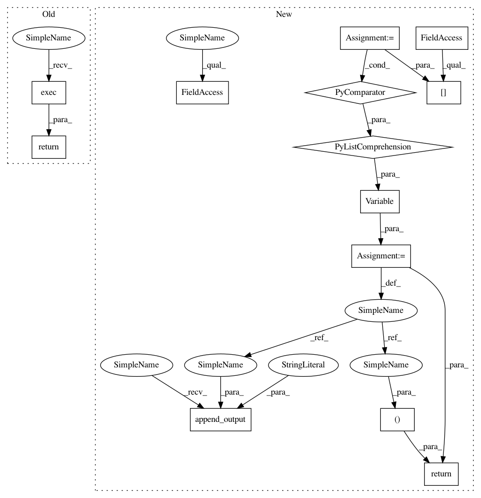

b4910f5fc768b1304099295a8d8d2d8d08474469,src/graph_transpiler/webdnn/graph/operators/tile.py,Tile,__call__,#Tile#Any#,35
Before Change
def __call__(self, x: Variable):
self.append_input("x", x)
return self.exec()
def exec(self):
x = self.inputs["x"]
assert x.ndim == len(self.multiplier), f
After Change
(x.ndim)={x.ndim}
(len(self.multiplier))={len(self.multiplier)}
y_shape = [self.multiplier[a] * x.shape_dict[a] for a in x.order.axes]
y = Variable(y_shape, x.order)
self.append_input("x", x)
self.append_output("y", y)
return y,
@property
def multiplier(self) -> AxisKeyDict[int]:
return self.parameters["multiplier"]
In pattern: SUPERPATTERN
Frequency: 3
Non-data size: 13
Instances
Project Name: mil-tokyo/webdnn
Commit Name: b4910f5fc768b1304099295a8d8d2d8d08474469
Time: 2018-01-25
Author: y.kikura@gmail.com
File Name: src/graph_transpiler/webdnn/graph/operators/tile.py
Class Name: Tile
Method Name: __call__
Project Name: mil-tokyo/webdnn
Commit Name: b4910f5fc768b1304099295a8d8d2d8d08474469
Time: 2018-01-25
Author: y.kikura@gmail.com
File Name: src/graph_transpiler/webdnn/graph/operators/reinterpret_axis.py
Class Name: ReinterpretAxis
Method Name: __call__
Project Name: mil-tokyo/webdnn
Commit Name: b4910f5fc768b1304099295a8d8d2d8d08474469
Time: 2018-01-25
Author: y.kikura@gmail.com
File Name: src/graph_transpiler/webdnn/graph/operators/reduce.py
Class Name: Reduce
Method Name: __call__